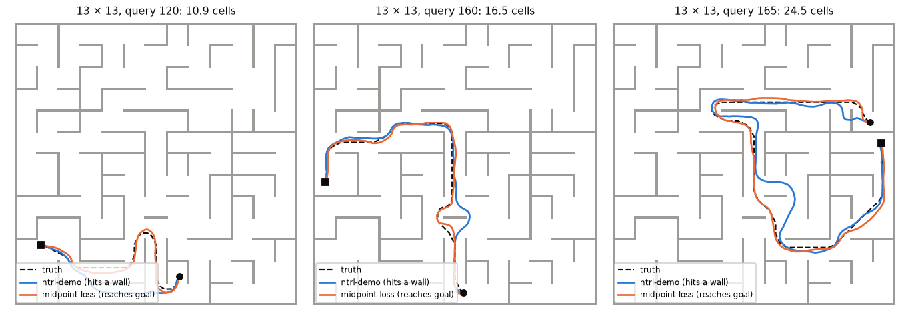
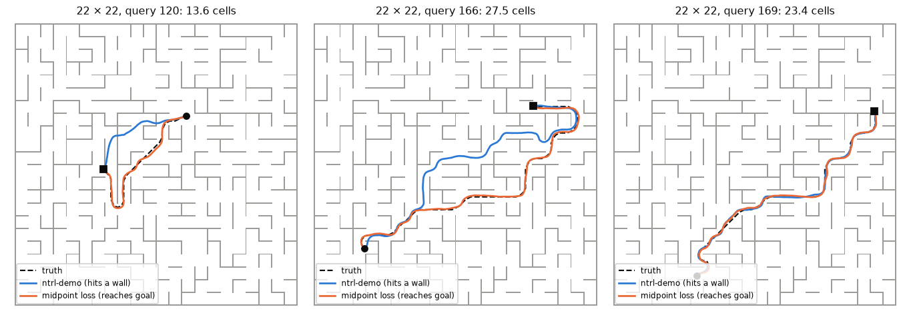

Adding a travel-time midpoint loss to ntrl-demo after epoch 2,000 lifts MPPI success from 88 to 98 % on 10×10, 59 to 91 % on 13×13 and 23 to 38 % on 22×22, with the planner, data, network and the first 2,000 epochs unchanged. The term asks that the network's travel time between two poses equal the sum over the two halves of a path the planner actually drove, split at the half-way point in travel time and recursively down to one cell.
ntrl-demo learns T(x, y), the travel time between two poses, from local terms: an eikonal term that ties |∇T| to the speed at a sampled pose, a TD step and a wall-normal term. Nothing in it looks at long distances, and on mazes larger than its 7×7 demo the long-range values drift up to twice the true travel time while MPPI starts cutting through walls. The midpoint term adds that long-range check, using the planner itself.
Schematic, with the cut points computed for the drawn route. The robot crawls through the narrow gap at 0.15 of its speed, so half of the travel time is spent by the time it is just past the gap (c), long before half of the length (◇). Small dots: the ends of eight leaves of equal travel time. Cutting by time puts many short pieces where the robot is slow, next to walls, and few long ones in the open.
The test queries, planner and scorer are those of the maze-scale study: 40 queries per true-distance bin, each certified by a collision-free truth path; ntrl-demo’s MPPI with planning seeds 0, 1 and 2; a run succeeds when it reaches the goal without the robot touching a wall. Each point averages the training seeds (87358, 1, 2 where run); the whisker is the seed range. Every field is the network at epoch 5,000. Control resumes the same epoch-2,000 network with the same loop and no midpoint term.
| maze | field | seed 87358 | seed 1 | seed 2 | all | % |
|---|---|---|---|---|---|---|
| 10×10 | ntrl-demo | 500/600 | 523/600 | 560/600 | 1583/1800 | 88 |
| 10×10 | control (resumed, no term) | 541/600 | 555/600 | 565/600 | 1661/1800 | 92 |
| 10×10 | midpoint loss | 586/600 | 594/600 | 586/600 | 1766/1800 | 98 |
| 10×10 | ntrl-demo, B×3 | 592/600 | 575/600 | 545/600 | 1712/1800 | 95 |
| 10×10 | midpoint loss on B×3 | 594/600 | 593/600 | 593/600 | 1780/1800 | 99 |
| 13×13 | ntrl-demo | 347/600 | 320/600 | 393/600 | 1060/1800 | 59 |
| 13×13 | control (resumed, no term) | 334/600 | 337/600 | 408/600 | 1079/1800 | 60 |
| 13×13 | midpoint loss | 536/600 | 559/600 | 543/600 | 1638/1800 | 91 |
| 13×13 | ntrl-demo, B×3 | 554/600 | 529/600 | 537/600 | 1620/1800 | 90 |
| 13×13 | midpoint loss on B×3 | 532/600 | 578/600 | 580/600 | 1690/1800 | 94 |
| 22×22 | ntrl-demo | 152/720 | 186/720 | 167/720 | 505/2160 | 23 |
| 22×22 | control (resumed, no term) | 172/720 | 174/720 | 165/720 | 511/2160 | 24 |
| 22×22 | midpoint loss | 282/720 | 281/720 | 257/720 | 820/2160 | 38 |
| 22×22 | ntrl-demo, B×6 | 302/720 | 229/720 | 395/720 | 926/2160 | 43 |
| 22×22 | midpoint loss on B×6 | 395/720 | 398/720 | 474/720 | 1267/2160 | 59 |
| maze | field | 0.5-2 cells | 2-4 cells | 4-8 cells | 8-16 cells | 16-32 cells | 32-64 cells |
|---|---|---|---|---|---|---|---|
| 10×10 | ntrl-demo | 99 | 92 | 96 | 87 | 66 | |
| 10×10 | control | 98 | 98 | 97 | 93 | 76 | |
| 10×10 | midpoint loss | 99 | 100 | 100 | 98 | 93 | |
| 10×10 | ntrl-demo B×3 | 100 | 99 | 99 | 92 | 86 | |
| 10×10 | midpoint on B×3 | 100 | 100 | 97 | 98 | 100 | |
| 13×13 | ntrl-demo | 94 | 78 | 59 | 44 | 19 | |
| 13×13 | control | 93 | 76 | 63 | 42 | 26 | |
| 13×13 | midpoint loss | 98 | 89 | 88 | 91 | 89 | |
| 13×13 | ntrl-demo B×3 | 99 | 97 | 89 | 91 | 75 | |
| 13×13 | midpoint on B×3 | 100 | 100 | 94 | 91 | 85 | |
| 22×22 | ntrl-demo | 75 | 32 | 16 | 12 | 5 | 0 |
| 22×22 | control | 74 | 29 | 18 | 18 | 3 | 0 |
| 22×22 | midpoint loss | 85 | 58 | 31 | 36 | 18 | 0 |
| 22×22 | ntrl-demo B×6 | 86 | 64 | 42 | 35 | 22 | 8 |
| 22×22 | midpoint on B×6 | 90 | 75 | 60 | 64 | 44 | 19 |
The maze-scale study’s best fix for ntrl-demo was a higher input frequency: its Fourier matrix multiplied by 3 (10×10, 13×13) or 6 (22×22). Run on those networks, forked at epoch 2,000 in the same way, the midpoint loss adds to it on every maze: 99 / 94 / 59 % against 95 / 90 / 43 % for the higher-frequency networks alone. Per training seed: 22×22 395 / 398 / 474 vs 302 / 229 / 395 of 720, 13×13 532 / 578 / 580 vs 554 / 529 / 537 of 600, 10×10 594 / 593 / 593 vs 592 / 575 / 545. The old segment-DP chain planned worse on these networks than on the plain ones; the midpoint term, which keeps ntrl-demo’s own loss in the same network, does not have that problem. Switch on the dashed series above to see it by distance.
ntrl-demo’s long-range values drift high: on 13×13 its median T/T* is 2.08 at 16–32 cells. With the midpoint term the field sits at 0.97–1.17 in every distance bin of every maze. Planning gains for a reason one step removed: MPPI fails by driving into walls, which happens where the field’s descent direction next to a wall points into it, because the goal is behind the wall and the field does not know the way round. Correct long-range values for pairs whose route goes around the wall turn that direction along the wall. The share of such near-wall poses falls from 4.0 to 2.3 % on 13×13 and from 11.8 to 6.0 % on 22×22 for goals beyond 8 cells, and by similar factors for nearer goals, while the steepness of the field next to walls changes little.
| maze | field | median T / T* by distance bin | descent cos | descent into wall (%) | free-space |∇T| |
|---|---|---|---|---|---|
| 10×10 | ntrl-demo | 1.04 · 1.12 · 1.21 · 1.45 · 1.80 | 0.90 | 2.5 | 1.11 |
| 10×10 | control | 1.03 · 1.12 · 1.22 · 1.41 · 1.75 | 0.91 | 2.3 | 1.08 |
| 10×10 | midpoint loss | 0.97 · 1.00 · 1.00 · 1.02 · 1.08 | 0.94 | 1.1 | 1.01 |
| 10×10 | ntrl-demo B×3 | 0.99 · 1.03 · 1.11 · 1.27 · 1.54 | 0.92 | 1.3 | 1.06 |
| 10×10 | midpoint on B×3 | 0.98 · 1.00 · 1.00 · 1.02 · 1.06 | 0.95 | 0.6 | 1.02 |
| 13×13 | ntrl-demo | 1.12 · 1.19 · 1.27 · 1.95 · 2.08 | 0.88 | 4.0 | 1.14 |
| 13×13 | control | 1.14 · 1.18 · 1.28 · 1.94 · 2.07 | 0.90 | 4.4 | 1.14 |
| 13×13 | midpoint loss | 1.04 · 1.03 · 1.05 · 1.06 · 1.06 | 0.93 | 2.3 | 1.05 |
| 13×13 | ntrl-demo B×3 | 1.06 · 1.08 · 1.12 · 1.56 · 1.63 | 0.92 | 1.8 | 1.08 |
| 13×13 | midpoint on B×3 | 1.02 · 1.00 · 1.01 · 1.02 · 1.04 | 0.94 | 1.1 | 1.03 |
| 22×22 | ntrl-demo | 1.20 · 1.26 · 1.34 · 1.43 · 1.39 · 1.01 | 0.79 | 11.8 | 1.13 |
| 22×22 | control | 1.18 · 1.32 · 1.35 · 1.46 · 1.39 · 1.03 | 0.81 | 10.5 | 1.12 |
| 22×22 | midpoint loss | 1.17 · 1.12 · 1.11 · 1.16 · 1.14 · 0.97 | 0.83 | 6.0 | 1.08 |
| 22×22 | ntrl-demo B×6 | 1.21 · 1.14 · 1.43 · 1.67 · 1.79 · 1.70 | 0.84 | 4.0 | 1.17 |
| 22×22 | midpoint on B×6 | 1.09 · 1.03 · 1.08 · 1.13 · 1.15 · 1.11 | 0.87 | 3.0 | 1.10 |
Descent into wall: share of near-wall poses (inside ntrl-demo’s speed margin) where −∇T(x, goal) has a component above 0.3 into the wall, for goals at least 8 cells away (400,000 poses paired with the 48 truth goals). Free-space |∇T|: median at poses at least 0.25 cells from any wall, where the true value is 1.
All on 13×13 with training seed 87358. Read literally, with the network’s own T at the leaves and the planner’s own drives, the loss gets 446 of 600 against the control’s 334, but slowly, and the whole field ends up inflated (T/T* 1.37 at 0.5–2 cells): each leaf carries ntrl-demo’s short-range overestimate and the targets add them up. Anchoring each leaf to the travel time the robot actually needed over it gives 506, and 501 with training drives that keep out of walls. Adding random sub-paths between leaf ends to those gives 536. The same wall-avoiding drives with the network at the leaves get only 382: more long valid paths, each adding more biased leaves.
| variant | what changes | success | % | 16-32 cells (%) | mean T/T* |
|---|---|---|---|---|---|
| ntrl-demo (baseline, epoch 5000) | 347/600 | 58 | 27 | 1.50 | |
| control | no midpoint term (same resumed loop) | 334/600 | 56 | 17 | 1.51 |
| plain, net leaves, tree | literal recursion: network at the leaves, test-planner traversals, midpoint tree | 446/600 | 74 | 63 | 1.50 |
| plain, min leaves, tree | leaves anchored to the path's own travel time | 506/600 | 84 | 65 | 1.12 |
| safe, net leaves, tree | network leaves, collision-aware traversals | 382/600 | 64 | 31 | 1.62 |
| safe, min leaves, tree | anchored leaves, collision-aware traversals | 501/600 | 84 | 66 | 1.15 |
| safe, min leaves, tree + sub-paths | anchored leaves, collision-aware traversals, plus random sub-paths (main) | 536/600 | 89 | 87 | 1.06 |
Against 536 for the main setting: full weight from epoch 2,001 without the ramp 514; weight 0.3 442; weight 3 537; term from epoch 3,000 501. Where the recursion stops matters: leaves of 0.5 cells 411, 2 cells 524. The 0.5-cell run’s values are as calibrated as the main run’s, but its descent direction near walls falls back to ntrl-demo’s for goals under 8 cells (5.0 % into the wall at 0.5–2 cells vs 2.8 %), and it hits walls three times as often.
| main config with | success | % | 16-32 cells (%) |
|---|---|---|---|
| main leaf_cells 0.5 | 411/600 | 68 | 42 |
| main leaf_cells 2.0 | 524/600 | 87 | 78 |
| main ramp 1 | 514/600 | 86 | 70 |
| main start 3000 | 501/600 | 84 | 73 |
| main weight 0.3 | 442/600 | 74 | 47 |
| main weight 3 | 537/600 | 90 | 81 |
A u-turn is the 1-cell query around the end of a wall from the maze-scale study: start and goal sit in the two cells on either side, and the true path goes around, about 2.2 cells. It tests how sharply one wall is drawn, not long-range routing. The midpoint loss helps (13×13: 30 → 50 %), but the higher input frequency helps more (81 %), and on 22×22 the two add up. The fixes address different failures.
| maze | field | seed 87358 | seed 1 | seed 2 | % |
|---|---|---|---|---|---|
| 10×10 | ntrl-demo | 87/120 | 117/120 | 95/120 | 83 |
| 10×10 | midpoint loss | 109/120 | 109/120 | 105/120 | 90 |
| 10×10 | ntrl-demo B×3 | 113/120 | 115/120 | 119/120 | 96 |
| 10×10 | midpoint on B×3 | 117/120 | 113/120 | 120/120 | 97 |
| 13×13 | ntrl-demo | 24/120 | 39/120 | 45/120 | 30 |
| 13×13 | midpoint loss | 58/120 | 69/120 | 53/120 | 50 |
| 13×13 | ntrl-demo B×3 | 93/120 | 112/120 | 85/120 | 81 |
| 13×13 | midpoint on B×3 | 100/120 | 103/120 | 96/120 | 83 |
| 22×22 | ntrl-demo | 4/120 | 3/120 | 3/120 | 3 |
| 22×22 | midpoint loss | 21/120 | 26/120 | 21/120 | 19 |
| 22×22 | ntrl-demo B×6 | 32/120 | 12/120 | 48/120 | 26 |
| 22×22 | midpoint on B×6 | 48/120 | 51/120 | 62/120 | 45 |


models/metric network and its 500,000-pair point recipe in the robot’s C-space, as in the maze-scale study; nothing in the network, data or planner changes.| maze | field | seed | registered run |
|---|---|---|---|
| 10×10 | control | 87358 | 20261102T083915Z-5d3a219a |
| 10×10 | control | 1 | 20261102T105335Z-b9413eac |
| 10×10 | control | 2 | 20261102T105715Z-8dd3a22c |
| 10×10 | ntrl-demo | 87358 | 20261102T032216Z-e76476bf |
| 10×10 | ntrl-demo | 1 | 20261102T033305Z-5d802f80 |
| 10×10 | ntrl-demo | 2 | 20261102T032238Z-09a41392 |
| 10×10 | ntrl-demo B×3 | 87358 | 20261102T040322Z-06099883 |
| 10×10 | ntrl-demo B×3 | 1 | 20261102T050643Z-d64a530a |
| 10×10 | ntrl-demo B×3 | 2 | 20261102T051954Z-3166a3d5 |
| 10×10 | safe, min leaves, tree + sub-paths | 87358 | 20261102T081615Z-0adefad6 |
| 10×10 | safe, min leaves, tree + sub-paths | 1 | 20261102T084255Z-3b6d92ec |
| 10×10 | safe, min leaves, tree + sub-paths | 2 | 20261102T090055Z-d3a92016 |
| 10×10 | safe, min leaves, tree + sub-paths on B×3 | 87358 | 20261102T091915Z-0b9c310f |
| 10×10 | safe, min leaves, tree + sub-paths on B×3 | 1 | 20261102T130956Z-270d27c2 |
| 10×10 | safe, min leaves, tree + sub-paths on B×3 | 2 | 20261102T130036Z-37851b08 |
| 13×13 | control | 87358 | 20261102T080221Z-7d781455 |
| 13×13 | control | 1 | 20261102T104535Z-57774684 |
| 13×13 | control | 2 | 20261102T104935Z-e1bd90d4 |
| 13×13 | ntrl-demo | 87358 | 20261101T203437Z-ebc95225 |
| 13×13 | ntrl-demo | 1 | 20261101T204630Z-58badec5 |
| 13×13 | ntrl-demo | 2 | 20261101T205900Z-c57aa0f1 |
| 13×13 | ntrl-demo B×3 | 87358 | 20261102T014741Z-dbca8e69 |
| 13×13 | ntrl-demo B×3 | 1 | 20261102T023943Z-95b7bd4e |
| 13×13 | ntrl-demo B×3 | 2 | 20261102T025340Z-27b1eeb6 |
| 13×13 | plain, min leaves, tree | 87358 | 20261102T080121Z-3c09dbc5 |
| 13×13 | plain, net leaves, tree | 87358 | 20261102T094155Z-1b4c2b28 |
| 13×13 | safe, min leaves, tree | 87358 | 20261102T124816Z-1ad6fa69 |
| 13×13 | safe, min leaves, tree + sub-paths | 87358 | 20261102T081356Z-c2f195aa |
| 13×13 | safe, min leaves, tree + sub-paths | 1 | 20261102T085716Z-07ad2d13 |
| 13×13 | safe, min leaves, tree + sub-paths | 2 | 20261102T093556Z-28941586 |
| 13×13 | safe, min leaves, tree + sub-paths (leaf_cells 0.5) | 87358 | 20261102T112215Z-efd2dc52 |
| 13×13 | safe, min leaves, tree + sub-paths (leaf_cells 2.0) | 87358 | 20261102T114335Z-1deaa5d8 |
| 13×13 | safe, min leaves, tree + sub-paths (ramp 1) | 87358 | 20261102T100215Z-4f2512d6 |
| 13×13 | safe, min leaves, tree + sub-paths (start 3000) | 87358 | 20261102T125617Z-d624cdee |
| 13×13 | safe, min leaves, tree + sub-paths (weight 0.3) | 87358 | 20261102T102355Z-36a6b6da |
| 13×13 | safe, min leaves, tree + sub-paths (weight 3) | 87358 | 20261102T120556Z-f490c81d |
| 13×13 | safe, min leaves, tree + sub-paths on B×3 | 87358 | 20261102T103336Z-d6a17863 |
| 13×13 | safe, min leaves, tree + sub-paths on B×3 | 1 | 20261102T120536Z-9e2dcf27 |
| 13×13 | safe, min leaves, tree + sub-paths on B×3 | 2 | 20261102T122656Z-2f8dbd8b |
| 13×13 | safe, net leaves, tree | 87358 | 20261102T110055Z-fa314571 |
| 22×22 | control | 87358 | 20261102T093735Z-bd83ffe6 |
| 22×22 | control | 1 | 20261102T124856Z-11d64245 |
| 22×22 | control | 2 | 20261102T125156Z-01aa0526 |
| 22×22 | ntrl-demo | 87358 | 20261101T193703Z-dd44f02b |
| 22×22 | ntrl-demo | 1 | 20261101T194908Z-fa2678e3 |
| 22×22 | ntrl-demo | 2 | 20261101T200614Z-92e8b351 |
| 22×22 | ntrl-demo B×6 | 87358 | 20261102T032133Z-9d61cff5 |
| 22×22 | ntrl-demo B×6 | 1 | 20261102T050535Z-7879ad1e |
| 22×22 | ntrl-demo B×6 | 2 | 20261102T051820Z-834b2691 |
| 22×22 | safe, min leaves, tree + sub-paths | 87358 | 20261102T084156Z-6809fed7 |
| 22×22 | safe, min leaves, tree + sub-paths | 1 | 20261102T101756Z-b7373abb |
| 22×22 | safe, min leaves, tree + sub-paths | 2 | 20261102T111536Z-214c8f06 |
| 22×22 | safe, min leaves, tree + sub-paths on B×6 | 87358 | 20261102T093836Z-c443b3c4 |
| 22×22 | safe, min leaves, tree + sub-paths on B×6 | 1 | 20261102T110956Z-1a18d0c6 |
| 22×22 | safe, min leaves, tree + sub-paths on B×6 | 2 | 20261102T115656Z-35fbb1f6 |